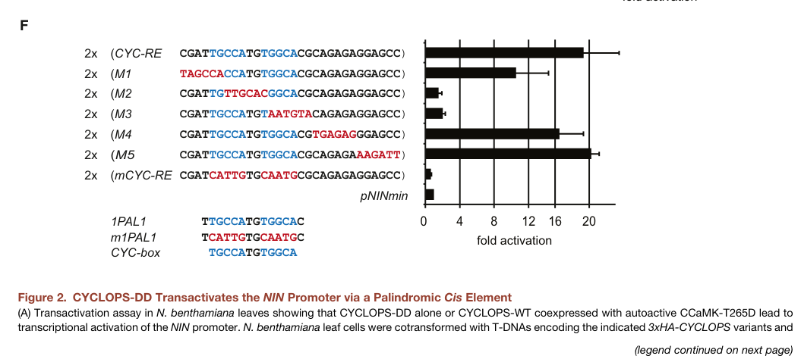

CYCLOPS (also called IPD3, INTERACTING PROTEIN OF DMI3) is a plant-specific 518-residue nuclear protein of Lotus japonicus that acts as a phosphorylation-activated, sequence-specific DNA-binding transcriptional activator in the common symbiosis signalling pathway shared by root nodule symbiosis with rhizobia and arbuscular mycorrhiza (AM) with glomeromycotan fungi. It has no similarity to known protein families outside the CYCLOPS family; it carries an N-terminal negative regulatory region, two predicted nuclear localization signals (the C-terminal-proximal one shown to be functional), a central transactivation region and a C-terminal coiled-coil region that contributes to DNA binding. CYCLOPS forms a preassembled, stimulus-independent nuclear complex with the calcium- and calmodulin-dependent protein kinase CCaMK, which decodes symbiotic nuclear calcium oscillations; CCaMK phosphorylates CYCLOPS, and phosphorylation of two N-terminal serines (Ser50 and Ser154) is required for CYCLOPS activity. Phosphorylated CYCLOPS binds cis-regulatory CYCLOPS-response elements and transactivates symbiosis genes, including NODULE INCEPTION (NIN; initiating a NIN/NF-Y cascade for nodule organogenesis), the AP2/ERF transcription factor gene ERN1 (required for infection-thread formation), and, together with CCaMK and DELLA proteins, the GRAS transcription factor gene RAM1 that controls arbuscule branching. cyclops mutants are impaired in rhizobial infection-thread formation and in AM fungal entry of outer cortical cells and arbuscule development, while nodule primordia can still form; a phosphomimetic CYCLOPS is sufficient to trigger spontaneous nodule organogenesis without rhizobia or CCaMK. The function is conserved across angiosperms, as rice CYCLOPS is required for AM and complements Lotus cyclops mutants.
| GO Term | Evidence | Action | Reason |
|---|---|---|---|
|
GO:0003700
DNA-binding transcription factor activity
|
IDA
PMID:27020747 A CCaMK-CYCLOPS-DELLA Complex Activates Transcription of RAM... |
MODIFY |
Summary: CYCLOPS binds a cis element in the RAM1 promoter and, in a complex with CCaMK and DELLA, activates RAM1 transcription (PMID:27020747). Its DNA-binding transcriptional activator activity is independently shown for the NIN promoter (PMID:24528861) and the ERN1 promoter (PMID:28503742).
Reason: The annotation is correct and represents the core molecular function, but all characterized CYCLOPS targets (RAM1, NIN, ERN1) are activated, and CYCLOPS has been shown to be a transcriptional activator with a mapped transactivation region. The more specific child term DNA-binding transcription activator activity (GO:0001216) captures this. The RNA polymerase II-specific variant is not used because the polymerase specificity has not been addressed experimentally for this plant protein.
Proposed replacements:
DNA-binding transcription activator activity
Supporting Evidence:
PMID:27020747
The corresponding proteins form a complex that activates RAM1 expression via binding of CYCLOPS to a cis element in the RAM1 promoter.
PMID:24528861
We show that CYCLOPS, a direct phosphorylation substrate of CCaMK, is a DNA-binding transcriptional activator.
|
|
GO:0005515
protein binding
|
IPI
PMID:19074278 CYCLOPS, a mediator of symbiotic intracellular accommodation... |
MODIFY |
Summary: The interacting partner A0AAR7 is L. japonicus CCaMK. Yano et al. showed direct CYCLOPS-CCaMK interaction by Y2H and BiFC in plant nuclei; the interaction requires kinase-active CCaMK and CYCLOPS is phosphorylated by CCaMK in vitro.
Reason: Generic protein binding is uninformative. The cited paper directly supports interaction with a protein kinase (CCaMK), of which CYCLOPS is a phosphorylation substrate and with which it forms a preassembled nuclear complex. Protein kinase binding (GO:0019901) is the evidence-backed, more informative term. This binding is a mechanistic feature of the CCaMK-CYCLOPS module rather than CYCLOPS's core activity, which is transcriptional activation.
Proposed replacements:
protein kinase binding
Supporting Evidence:
PMID:19074278
We show that CYCLOPS specifically interacts with kinase-active CCaMK in planta and is phosphorylated by CCaMK in vitro, suggesting that CYCLOPS is a phosphorylation target of CCaMK.
PMID:19074278
Strong fluorescence was observed in the nucleus when CYCLOPS and CCaMK fused to the C- and N-terminal half of YFP, respectively, were coexpressed
|
|
GO:0005634
nucleus
|
IDA
PMID:19074278 CYCLOPS, a mediator of symbiotic intracellular accommodation... |
ACCEPT |
Summary: GFP-CYCLOPS was detected exclusively in the nucleus of N. benthamiana epidermal cells, deletion of the C-terminal-proximal NLS abolished nuclear restriction, and CYCLOPS colocalized with CCaMK in nuclei of L. japonicus root cells.
Reason: Direct localization evidence with NLS mapping; the nucleus is where CYCLOPS acts as a transcription factor.
Supporting Evidence:
PMID:19074278
GFP-CYCLOPS and a C-terminal truncation lacking the coiled-coil motif (GFP-CYCLOPS 1–449) were exclusively detected in the cell nucleus
|
|
GO:0005634
nucleus
|
IEA
GO_REF:0000120 |
ACCEPT |
Summary: Electronic nucleus annotation from the CYCLOPS family signature and the UniProt subcellular location, consistent with experimental data.
Reason: Consistent with direct experimental localization of CYCLOPS to the nucleus (PMID:19074278).
Supporting Evidence:
PMID:19074278
CYCLOPS carries a functional nuclear localization signal and a predicted coiled-coil domain.
|
|
GO:0006355
regulation of DNA-templated transcription
|
IDA
PMID:27020747 A CCaMK-CYCLOPS-DELLA Complex Activates Transcription of RAM... |
MODIFY |
Summary: CYCLOPS, in a complex with CCaMK and DELLA, activates RAM1 transcription by binding a cis element in the RAM1 promoter.
Reason: Correct but less specific than the evidence warrants: the RAM1 data (and the NIN and ERN1 data) show positive regulation. Positive regulation of DNA-templated transcription (GO:0045893) is already annotated from PMID:28503742 and is the appropriate level.
Proposed replacements:
positive regulation of DNA-templated transcription
Supporting Evidence:
PMID:27020747
The corresponding proteins form a complex that activates RAM1 expression via binding of CYCLOPS to a cis element in the RAM1 promoter.
|
|
GO:0009877
nodulation
|
IMP
PMID:19074278 CYCLOPS, a mediator of symbiotic intracellular accommodation... |
ACCEPT |
Summary: cyclops mutants form nodule primordia but no infection threads, and nodule development arrests prematurely; mutant plants are stunted under nitrogen-limiting conditions with Mesorhizobium loti. Complementation with genomic CYCLOPS restored wild-type nodulation. Subsequent work showed that phosphorylated CYCLOPS directly activates NIN and that a phosphomimetic CYCLOPS is sufficient to trigger nodule organogenesis (PMID:24528861), and that CYCLOPS activates ERN1, required for infection threads (PMID:28503742).
Reason: CYCLOPS is a transcription factor that directly activates the nodulation regulators NIN and ERN1, so it does part of the work of the nodulation program (transcriptional induction of the symbiotic gene cascade) rather than merely being required for it. Yano et al. noted that CYCLOPS is dispensable for organogenesis when CCaMK is deregulated, but its infection role and the later gain-of-function data justify the process annotation.
Supporting Evidence:
PMID:19074278
Hairy root transformation of cyclops-3 with the genomic CYCLOPS sequence, including the native promoter, resulted in the development of WT-like nodules upon inoculation with M. loti
PMID:24528861
A phosphomimetic version of CYCLOPS was sufficient to trigger root nodule organogenesis in the absence of rhizobia and CCaMK.
PMID:28503742
We conclude that the activation of ERN1 by CCaMK/CYCLOPS complex is an important step controlling IT-mediated bacterial progression into plant cells.
|
|
GO:0036377
arbuscular mycorrhizal association
|
IEA
GO_REF:0000002 |
ACCEPT |
Summary: InterPro2GO mapping from the CYCLOPS family signature. CYCLOPS orthologues are required for AM in Lotus and rice, and the family is conserved in AM-forming plants.
Reason: The family-level mapping is well founded: loss of CYCLOPS blocks AM in both a legume and a monocot, and rice CYCLOPS complements Lotus cyclops mutants.
Supporting Evidence:
PMID:19074278
Cyclops mutants of rice were impaired in AM, and rice CYCLOPS could restore symbiosis in Lotus cyclops mutants, indicating a functional conservation across angiosperms.
|
|
GO:0036377
arbuscular mycorrhizal association
|
IMP
PMID:19074278 CYCLOPS, a mediator of symbiotic intracellular accommodation... |
ACCEPT |
Summary: On cyclops roots AM fungal hyphae form aberrant swellings in epidermal and outer cortical cells and arbuscules are almost completely absent; complementation with CYCLOPS cDNA restores AM.
Reason: Mutant phenotype with complementation; combined with the later demonstration that CYCLOPS directly activates RAM1 (PMID:27020747), this reflects direct participation via transcriptional activation of the AM program.
Supporting Evidence:
PMID:19074278
These data indicate that CYCLOPS is required for fungal infection of the outer cortical cell layers and for arbuscule development.
|
|
GO:0036377
arbuscular mycorrhizal association
|
IMP
PMID:27020747 A CCaMK-CYCLOPS-DELLA Complex Activates Transcription of RAM... |
ACCEPT |
Summary: Epistasis analysis places RAM1 downstream of CYCLOPS: ectopic RAM1 expression restores arbuscule formation in cyclops mutants, and CYCLOPS binds the RAM1 promoter to activate it.
Reason: Genetic and molecular evidence that CYCLOPS drives the AM arbuscule program through RAM1 activation.
Supporting Evidence:
PMID:27020747
Epistasis analysis places RAM1 downstream of CCaMK, CYCLOPS, and DELLA because ectopic expression of RAM1 restores arbuscule formation in cyclops mutants and in the presence of suppressive gibberellin.
|
|
GO:0042803
protein homodimerization activity
|
IPI
PMID:19074278 CYCLOPS, a mediator of symbiotic intracellular accommodation... |
KEEP AS NON CORE |
Summary: Self-interaction was detected by Y2H (requiring residues 81-366) and by BiFC in planta for full-length CYCLOPS.
Reason: Experimentally supported, but the functional significance of CYCLOPS self-association for DNA binding or transactivation has not been established; it is a structural property rather than the core activity.
Supporting Evidence:
PMID:19074278
Using CYCLOPS 1–259 as bait revealed that CYCLOPS forms homodimers, and that the region between residues 81–366 is necessary for self-interaction
file:LOTJA/CYCLOPS/CYCLOPS-deep-research-falcon.md
protein-interaction measurements also detected its association with CCaMK and CYCLOPS homodimerization
|
|
GO:0043565
sequence-specific DNA binding
|
IDA
PMID:27020747 A CCaMK-CYCLOPS-DELLA Complex Activates Transcription of RAM... |
ACCEPT |
Summary: CYCLOPS binds a cis element in the RAM1 promoter.
Reason: Direct binding evidence to a defined promoter element; consistent with the sequence- and phosphorylation-dependent binding to the NIN CYC-box (PMID:24528861). It is a component of the core transcription activator activity.
Supporting Evidence:
PMID:27020747
activates RAM1 expression via binding of CYCLOPS to a cis element in the RAM1 promoter
PMID:24528861
CYCLOPS binds DNA in a sequence-specific and phosphorylation-dependent manner and transactivates the NODULE INCEPTION (NIN) gene.
|
|
GO:0043565
sequence-specific DNA binding
|
IDA
PMID:28503742 The ERN1 transcription factor gene is a target of the CCaMK/... |
ACCEPT |
Summary: CYCLOPS binds in a sequence-specific manner to a motif within the ERN1 promoter.
Reason: Direct DNA-protein interaction assay with a defined motif.
Supporting Evidence:
PMID:28503742
Functional promoter studies revealed that CYCLOPS binds in a sequence-specific manner to a motif within the ERN1 promoter
|
|
GO:0043565
sequence-specific DNA binding
|
IEA
GO_REF:0000002 |
ACCEPT |
Summary: InterPro2GO mapping from the CYCLOPS family signature; consistent with experimental DNA-binding data for Lotus CYCLOPS.
Reason: Supported by direct experimental evidence on this protein (PMID:24528861, PMID:28503742).
Supporting Evidence:
PMID:24528861
CYCLOPS binds DNA in a sequence-specific and phosphorylation-dependent manner
|
|
GO:0045893
positive regulation of DNA-templated transcription
|
IDA
PMID:28503742 The ERN1 transcription factor gene is a target of the CCaMK/... |
ACCEPT |
Summary: CYCLOPS together with CCaMK positively regulates ERN1 transcription; it also transactivates NIN (PMID:24528861) and RAM1 (PMID:27020747).
Reason: Direct transactivation evidence at defined promoter elements; this is the core biological role of CYCLOPS at the molecular level.
Supporting Evidence:
PMID:28503742
CYCLOPS binds in a sequence-specific manner to a motif within the ERN1 promoter and in combination with CCaMK positively regulates ERN1 transcription.
file:LOTJA/CYCLOPS/CYCLOPS-deep-research-falcon.md
CYCLOPS also directly regulates the Lotus ***ERN1*** promoter
|
Q: Is protein kinase binding (to CCaMK) the right way to capture the CCaMK-CYCLOPS relationship, or should it be modelled on the kinase side (CCaMK has_input CYCLOPS) in a GO-CAM of the common symbiosis pathway?
Q: How does a single CCaMK-CYCLOPS module select nodulation-specific (NIN, ERN1) versus AM-specific (RAM1) or shared (CBP1) target promoters; which partner proteins (e.g. DELLA) and promoter contexts determine specificity?
Q: What is the function, if any, of CYCLOPS homodimerization in DNA binding or transactivation?
Experiment: Genome-wide CYCLOPS binding (ChIP-seq or DAP-seq with wild-type versus phosphomimetic CYCLOPS-DD) in Lotus roots inoculated with rhizobia or AM fungi, to define the direct target repertoire for each symbiosis.
Experiment: Mutational analysis of the coiled-coil/self-interaction region combined with EMSA and transactivation assays to test whether dimerization is required for CYC-box binding.
The research report should be a detailed narrative explaining the function, biological processes, and localization of the gene product. Citations should be given for all claims.
You should prioritize authoritative reviews and primary scientific literature when conducting research. You can supplement
this with annotations you find in gene/protein databases, but these can be outdated or inaccurate.
We are specifically interested in the primary function of the gene - for enzymes, what reaction is catalyzed, and what is the substrate specificity? For transporters, what is the substrate? For structural proteins or adapters, what is the broader structural role? For signaling molecules, what is the role in the pathway.
We are interested in where in or outside the cell the gene product carries out its function.
We are also interested in the signaling or biochemical pathways in which the gene functions. We are less interested in broad pleiotropic effects, except where these elucidate the precise role.
Include evidence where possible. We are interested in both experimental evidence as well as inference from structure, evolution, or bioinformatic analysis. Precise studies should be prioritized over high-throughput, where available.
Identity and conclusion. The specified protein is Lotus japonicus CYCLOPS, also called LjCYCLOPS or IPD3. The accession A9XMT3 and CYCLOPS-family domain IPR040036 come from the supplied UniProt identification; the primary papers generally name the Lotus protein rather than its UniProt accession. Their descriptions of a nuclear, CCaMK-interacting CYCLOPS protein agree with that identification. Medicago truncatula IPD3 and other plants’ CYCLOPS proteins are homologs, not A9XMT3. (singh2014cyclopsadnabinding pages 1-2, vernie2024conservationofsymbiotic pages 9-12, aguirre2021thetranscriptionfactora pages 27-30)
Primary function. LjCYCLOPS is a phosphorylation-regulated, sequence-specific transcriptional activator that connects nuclear calcium signals elicited by symbiotic microorganisms to gene expression in root cells. It is neither a metabolic enzyme nor a transporter: its relevant molecular substrate is promoter DNA, and CCaMK acts on CYCLOPS as a protein kinase. It functions in the common symbiosis signaling pathway used by both rhizobial root-nodule symbiosis and arbuscular mycorrhiza. (singh2014cyclopsadnabinding pages 1-2, singh2014cyclopsadnabinding pages 2-3, singh2014cyclopsadnabinding pages 5-6, gong2021accamkcyclopsresponse pages 1-3)
Perception of rhizobial Nod factors or mycorrhizal signals leads to oscillations of calcium in root-cell nuclei. Nuclear calcium/calmodulin-dependent protein kinase CCaMK interacts with LjCYCLOPS and phosphorylates it, enabling CYCLOPS-dependent transcription. Fluorescently examined wild-type and phosphorylation-site mutant CYCLOPS proteins localized exclusively to the nucleus in the reported assays; protein-interaction measurements also detected its association with CCaMK and CYCLOPS homodimerization. The supported functional location is therefore the plant-cell nucleus, particularly in roots responding to symbionts—not the plasma membrane, extracellular space, fungus, or bacterium. (singh2014cyclopsadnabinding pages 1-2, singh2014cyclopsadnabinding pages 2-3, jhu2023dancingtoa pages 3-5)
In vitro kinase assays and mass spectrometry identified five CCaMK-phosphorylated serines. Functional substitutions singled out Ser50 and Ser154: replacing both with alanine impaired symbiotic function, whereas the S50D/S154D phosphomimetic, termed CYCLOPS-DD, activated transcription. The experiments support a model in which phosphorylation relieves inhibition by the N-terminal region, increasing DNA-binding activity; this conformational explanation remains a mechanistic interpretation rather than a directly resolved protein structure. The C-terminal portion carries transcriptional-activation activity, mapped especially to amino acids 267–380, and sequence-specific DNA-binding activity in the 364–518 region. (singh2014cyclopsadnabinding pages 2-3, singh2014cyclopsadnabinding pages 5-6)
The most firmly established direct target is NODULE INCEPTION (NIN). Promoter mutagenesis identified a 30-base-pair CYCLOPS-responsive element containing an essential palindromic CYC-box; binding assays showed preference for the intact sequence and for phosphorylated or phosphomimetic CYCLOPS. Reporter assays, promoter association, and measurements of endogenous NIN establish transcriptional activation in Lotus roots. NIN subsequently regulates NF-YA1 and NF-YB1, helping initiate nodule development. The experimentally mapped CYC-box provides unusually specific evidence for this annotation. (singh2014cyclopsadnabinding pages 2-3, singh2014cyclopsadnabinding pages 3-5, singh2014cyclopsadnabinding pages 5-6, singh2014cyclopsadnabinding pages 6-7, singh2014cyclopsadnabinding media a3e9b065)
CYCLOPS also directly regulates the Lotus ERN1 promoter: a CYCLOPS fragment bound its response element in a sequence-specific assay, CYCLOPS with activated CCaMK stimulated promoter activity, and cyclops-3 roots had diminished ERN1 expression particularly at rhizobial infection sites. This target connects nuclear signaling to infection-thread formation, not just nodule-organ initiation. In the mycorrhizal pathway, CYCLOPS acts with CCaMK and DELLA proteins to promote the AM-associated transcription factor RAM1; a CYCLOPS-responsive element in the RAM1 promoter and its role in arbuscule development have been reported. These promoters do not all have identical response-element sequences or symbiosis-specific outputs. (cerri2017theern1transcription pages 8-9, pimprikar2018transcriptionalregulationof pages 9-11, jhu2023dancingtoa pages 3-5)
The Lotus CBP1 promoter provides evidence of a shared output: a CYCLOPS-responsive regulatory region supports expression during both rhizobial and mycorrhizal symbioses. Promoter methylation suppressed reporter activity in the studied lines. Thus, promoter context and additional regulators matter when the same CCaMK–CYCLOPS module produces rhizobial-specific (NIN, ERN1), AM-associated (RAM1), or shared (CBP1) expression. That specificity is not completely explained. (gong2021accamkcyclopsresponse pages 1-3, gong2021accamkcyclopsresponse pages 20-23)
The genetic phenotype clarifies what the protein does and does not do. Lotus cyclops roots can curl root hairs in response to rhizobia and initiate nodule primordia, but infection generally aborts before successful intracellular accommodation and mature infected nodules. With AM fungi, impaired arbuscule development need not mean that fungal entry never occurred: intraradical hyphae can remain detectable. Conversely, expressing CYCLOPS-DD without rhizobia induced spontaneous nodules even in CCaMK-deficient roots; in one assay, 30–40% of transformed plants formed nodules, averaging 2–5 nodules per nodulated plant. These are experimental gain-of-function nodules, not evidence of autonomous nitrogen fixation or successful bacterial infection. (singh2014cyclopsadnabinding pages 1-2, singh2014cyclopsadnabinding pages 7-9, pimprikar2018transcriptionalregulationof pages 9-11, singh2014thecalciumsignature pages 156-160)
The evidence matrix below distinguishes direct molecular assays from phenotype and transcriptome results.
| Molecular event or direct target | Experimental basis | Biological implication | Reference (DOI; year) |
|---|---|---|---|
| Nuclear CCaMK–CYCLOPS signaling; phosphorylation at Ser50/Ser154 | LjCYCLOPS localized exclusively to nuclei, interacted with CCaMK, and was phosphorylated by Ca²⁺/calmodulin-activated CCaMK. Mass spectrometry identified five phosphoserines; combined S50A/S154A substitution impaired symbiotic function, whereas phosphomimetic S50D/S154D activated transcription. (singh2014cyclopsadnabinding pages 1-2, singh2014cyclopsadnabinding pages 2-3) | A9XMT3 is a nuclear, phosphorylation-regulated transcriptional activator—not an enzyme or transporter. CCaMK converts symbiotic nuclear Ca²⁺ oscillations into CYCLOPS-dependent gene expression. | 10.1016/j.chom.2014.01.011; 2014 |
| NIN promoter: palindromic CYCLOPS-response element (CYC-RE/CYC-box) | Reporter deletion and substitution mapped a 30-bp CYC-RE containing the essential palindrome TGCCATGTGGCA. EMSA and in-vivo promoter association showed sequence- and phosphorylation-dependent binding; CYCLOPS-DD induced endogenous NIN and downstream NF-YA1. (singh2014cyclopsadnabinding pages 2-3, singh2014cyclopsadnabinding pages 3-5, singh2014cyclopsadnabinding pages 5-6, singh2014cyclopsadnabinding pages 6-7) | Directly initiates a transcriptional cascade controlling rhizobial infection and nodule organogenesis. The C-terminal region contains activation and DNA-binding functions; residues 364–518 mediate CYC-box binding. | 10.1016/j.chom.2014.01.011; 2014 |
| CYCLOPS activation is sufficient for nodule initiation | Endogenous-promoter CYCLOPS-DD caused spontaneous nodules without rhizobia in CCaMK-null and kinase-dead backgrounds: 30–40% of transformed plants formed an average of 2–5 nodules. Nodulation still required NSP1, NSP2, and NIN. (singh2014cyclopsadnabinding pages 7-9) | Phosphorylated CYCLOPS is a principal downstream effector sufficient to bypass upstream SYMRK/CCaMK signaling for organ initiation, although it does not by itself reproduce productive bacterial infection. | 10.1016/j.chom.2014.01.011; 2014 |
| ERN1 promoter: direct CYC-RE target | CYCLOPS-min (aa 255–518) bound the ERN1 CYC-RE by sequence-specific EMSA; CYCLOPS plus autoactive CCaMK activated the promoter. In cyclops-3, ERN1 promoter activity and transcript abundance were reduced particularly at rhizobial infection sites. (cerri2017theern1transcription pages 8-9) | Connects the CCaMK/CYCLOPS module to infection-chamber and infection-thread development, explaining why cyclops mutants initiate root-hair responses and nodule primordia but abort intracellular rhizobial accommodation. | 10.1111/nph.14547; 2017 |
| RAM1 promoter in arbuscular mycorrhiza; DELLA-dependent complex | LjCYCLOPS directly binds the RAM1 promoter AM-CYC element, whose reported core is CGGCCG; CYCLOPS is required for RAM1 activation by constitutively active nuclear CCaMK, with DELLA proteins promoting the CCaMK–CYCLOPS transcriptional complex. (pimprikar2018transcriptionalregulationof pages 9-11) | Activates the AM-specific transcriptional program needed for arbuscule branching. Lotus cyclops mutants can retain intraradical fungal hyphae but fail to form normal arbuscules, localizing the major defect to intracellular accommodation and arbuscule development rather than initial root entry. | 10.1016/j.cub.2016.01.069; 2016 |
| CBP1 promoter: shared AM and root-nodule response | A 113-bp CBP1 promoter region containing CYC-RE-CBP1 was sufficient for CCaMK/CYCLOPS-dependent expression during both arbuscular-mycorrhizal and rhizobial symbioses. Hypermethylation around the element suppressed reporter expression. (gong2021accamkcyclopsresponse pages 20-23, gong2021accamkcyclopsresponse pages 1-3) | Demonstrates that A9XMT3 can drive a shared common-symbiosis output, whereas promoter context and partner factors likely determine whether other targets are RNS-specific (NIN, ERN1) or AM-specific (RAM1). | 10.1111/nph.18112; 2022 |
| Genome-scale AM-fungal response: Gifu WT versus cyclops-4 | After 48 h exposure to approximately 200 pregerminated Rhizophagus irregularis spores, AMF induced 461 differentially expressed genes (DEGs) in CYCLOPS-positive Gifu but only 15 DEGs in cyclops-4. Without AMF, the Gifu-versus-cyclops-4 comparison yielded 338 DEGs; the short exposure measures early signaling, not established colonization. (hornstein2024ipd3amaster pages 2-5, hornstein2024ipd3amaster pages 10-13) | Confirms that LjCYCLOPS/IPD3 controls most of the early Lotus transcriptional response to AM fungi and may also regulate basal root transcription before fungal challenge. The study’s engineered Arabidopsis construct was Medicago truncatula IPD3Min, not Lotus A9XMT3, so its transgenic results are not direct evidence for the Lj protein. | 10.1007/s11103-024-01422-3; published February 18, 2024 |
Table: Compact evidence matrix for Lotus japonicus CYCLOPS/IPD3 (UniProt A9XMT3), covering its nuclear activation mechanism, direct transcriptional targets, symbiotic functions, and 2024 transcriptomic evidence. Cross-species findings are explicitly distinguished from direct evidence about the Lotus protein.
A 2024 peer-reviewed transcriptomic study compared wild-type Lotus Gifu with the cyclops-4 mutant after 48 hours of exposure to pregerminated Rhizophagus irregularis. Fungal exposure produced 461 differentially expressed genes in wild type versus 15 in the mutant; without fungal treatment, the genotype comparison yielded 338 differentially expressed genes. This supports a major role for LjCYCLOPS in the early mycorrhizal transcriptional response, but 48-hour exposure does not measure established arbuscules or prove that every affected gene is a direct CYCLOPS target. The paper also engineered Arabidopsis with a minimal Medicago IPD3 construct: those transgenic effects must not be attributed experimentally to Lotus A9XMT3. Hornstein et al., Plant Molecular Biology, published 18 February 2024, https://doi.org/10.1007/s11103-024-01422-3. (hornstein2024ipd3amaster pages 1-2, hornstein2024ipd3amaster pages 5-7, hornstein2024ipd3amaster pages 2-5, hornstein2024ipd3amaster pages 10-13)
A January 2024 preprint used the conserved CYCLOPS domain IPR040036 in a comparative analysis of 37 plant protein sequences and experimentally tested common-symbiosis-pathway components in the liverwort Marchantia paleacea. Its Marchantia cyclops mutants provide evolutionary evidence for an ancient mycorrhizal signaling role, but they are not Lotus knockouts; the preprint should not outweigh direct Lotus experiments when annotating A9XMT3. Vernié et al., bioRxiv, January 2024, https://doi.org/10.1101/2024.01.16.575147. (vernie2024conservationofsymbiotic pages 1-3, vernie2024conservationofsymbiotic pages 9-12)
Application and expert assessment. The demonstrated uses of LjCYCLOPS are experimental: phosphomimetic constructs probe nodulation signaling, and CYCLOPS-response-element reporters measure pathway-dependent transcription. Its pathway makes it relevant to prospective engineering of beneficial root symbioses, but no agricultural deployment or yield improvement from engineering Lotus A9XMT3 is established by these studies. A 2023 analysis by Jhu and Oldroyd emphasizes the unresolved problem of how a shared symbiosis pathway selects rhizobial versus fungal transcriptional outputs—and how signaling must be connected to infection and accommodation in other crops. PLOS Biology, 14 March 2023, https://doi.org/10.1371/journal.pbio.3001982. (singh2014cyclopsadnabinding pages 6-7, jhu2023dancingtoa pages 3-5)
Principal primary-source links: Singh et al., Cell Host & Microbe, 12 February 2014, https://doi.org/10.1016/j.chom.2014.01.011; Cerri et al., New Phytologist, 2017, https://doi.org/10.1111/nph.14547; Gong et al., New Phytologist, 2022, https://doi.org/10.1111/nph.18112. The accessible Gong experimental text was its August 2021 preprint, https://doi.org/10.1101/2021.08.11.455944. (singh2014cyclopsadnabinding pages 1-2, cerri2017theern1transcription pages 8-9, gong2021accamkcyclopsresponse pages 1-3)
References
(singh2014cyclopsadnabinding pages 1-2): Sylvia Singh, Katja Katzer, Jayne Lambert, Marion Cerri, and Martin Parniske. Cyclops, a dna-binding transcriptional activator, orchestrates symbiotic root nodule development. Cell host & microbe, 15 2:139-52, Feb 2014. URL: https://doi.org/10.1016/j.chom.2014.01.011, doi:10.1016/j.chom.2014.01.011. This article has 487 citations and is from a highest quality peer-reviewed journal.
(vernie2024conservationofsymbiotic pages 9-12): Tatiana Vernié, Mélanie Rich, Tifenn Pellen, Eve Teyssier, Vincent Garrigues, Lucie Chauderon, Lauréna Medioni, Fabian van Beveren, Cyril Libourel, Jean Keller, Camille Girou, Corinne Lefort, Aurélie Le Ru, Didier Reinhardt, Kyoichi Kodama, Syota Shimazaki, Patrice Morel, Junko Kyozuka, Malick Mbengue, Michiel Vandenbussche, and Pierre-Marc Delaux. Conservation of symbiotic signalling across 450 million years of plant evolution. bioRxiv, Jan 2024. URL: https://doi.org/10.1101/2024.01.16.575147, doi:10.1101/2024.01.16.575147. This article has 6 citations.
(aguirre2021thetranscriptionfactora pages 27-30): RE Andrade Aguirre. The transcription factor nin mediates a dynamic balance between gene activation and repression in l. japonicus. Unknown journal, 2021.
(singh2014cyclopsadnabinding pages 2-3): Sylvia Singh, Katja Katzer, Jayne Lambert, Marion Cerri, and Martin Parniske. Cyclops, a dna-binding transcriptional activator, orchestrates symbiotic root nodule development. Cell host & microbe, 15 2:139-52, Feb 2014. URL: https://doi.org/10.1016/j.chom.2014.01.011, doi:10.1016/j.chom.2014.01.011. This article has 487 citations and is from a highest quality peer-reviewed journal.
(singh2014cyclopsadnabinding pages 5-6): Sylvia Singh, Katja Katzer, Jayne Lambert, Marion Cerri, and Martin Parniske. Cyclops, a dna-binding transcriptional activator, orchestrates symbiotic root nodule development. Cell host & microbe, 15 2:139-52, Feb 2014. URL: https://doi.org/10.1016/j.chom.2014.01.011, doi:10.1016/j.chom.2014.01.011. This article has 487 citations and is from a highest quality peer-reviewed journal.
(gong2021accamkcyclopsresponse pages 1-3): Xiaoyun Gong, Elaine Jensen, Simone Bucerius, and Martin Parniske. A ccamk/cyclops response element in the promoter of l. japonicus calcium-binding protein 1 (cbp1) mediates transcriptional activation in root symbioses. bioRxiv, Aug 2021. URL: https://doi.org/10.1101/2021.08.11.455944, doi:10.1101/2021.08.11.455944. This article has 1 citations.
(jhu2023dancingtoa pages 3-5): Min-Yao Jhu and Giles E. D. Oldroyd. Dancing to a different tune, can we switch from chemical to biological nitrogen fixation for sustainable food security? PLOS Biology, 21:e3001982, Mar 2023. URL: https://doi.org/10.1371/journal.pbio.3001982, doi:10.1371/journal.pbio.3001982. This article has 100 citations and is from a highest quality peer-reviewed journal.
(singh2014cyclopsadnabinding pages 3-5): Sylvia Singh, Katja Katzer, Jayne Lambert, Marion Cerri, and Martin Parniske. Cyclops, a dna-binding transcriptional activator, orchestrates symbiotic root nodule development. Cell host & microbe, 15 2:139-52, Feb 2014. URL: https://doi.org/10.1016/j.chom.2014.01.011, doi:10.1016/j.chom.2014.01.011. This article has 487 citations and is from a highest quality peer-reviewed journal.
(singh2014cyclopsadnabinding pages 6-7): Sylvia Singh, Katja Katzer, Jayne Lambert, Marion Cerri, and Martin Parniske. Cyclops, a dna-binding transcriptional activator, orchestrates symbiotic root nodule development. Cell host & microbe, 15 2:139-52, Feb 2014. URL: https://doi.org/10.1016/j.chom.2014.01.011, doi:10.1016/j.chom.2014.01.011. This article has 487 citations and is from a highest quality peer-reviewed journal.
(singh2014cyclopsadnabinding media a3e9b065): Sylvia Singh, Katja Katzer, Jayne Lambert, Marion Cerri, and Martin Parniske. Cyclops, a dna-binding transcriptional activator, orchestrates symbiotic root nodule development. Cell host & microbe, 15 2:139-52, Feb 2014. URL: https://doi.org/10.1016/j.chom.2014.01.011, doi:10.1016/j.chom.2014.01.011. This article has 487 citations and is from a highest quality peer-reviewed journal.
(cerri2017theern1transcription pages 8-9): Marion R. Cerri, Quanhui Wang, P. Stolz, J. Folgmann, Lisa Francès, Katja Katzer, Xiaolin Li, A. Heckmann, Trevor L. Wang, J. A. Downie, A. Klingl, F. de Carvalho-Niebel, Fang Xie, and M. Parniske. The ern1 transcription factor gene is a target of the ccamk/cyclops complex and controls rhizobial infection in lotus japonicus. The New phytologist, 215 1:323-337, Jul 2017. URL: https://doi.org/10.1111/nph.14547, doi:10.1111/nph.14547. This article has 140 citations.
(pimprikar2018transcriptionalregulationof pages 9-11): Priya Pimprikar and Caroline Gutjahr. Transcriptional regulation of arbuscular mycorrhiza development. Plant and Cell Physiology, 59:673–690, Apr 2018. URL: https://doi.org/10.1093/pcp/pcy024, doi:10.1093/pcp/pcy024. This article has 166 citations and is from a domain leading peer-reviewed journal.
(gong2021accamkcyclopsresponse pages 20-23): Xiaoyun Gong, Elaine Jensen, Simone Bucerius, and Martin Parniske. A ccamk/cyclops response element in the promoter of l. japonicus calcium-binding protein 1 (cbp1) mediates transcriptional activation in root symbioses. bioRxiv, Aug 2021. URL: https://doi.org/10.1101/2021.08.11.455944, doi:10.1101/2021.08.11.455944. This article has 1 citations.
(singh2014cyclopsadnabinding pages 7-9): Sylvia Singh, Katja Katzer, Jayne Lambert, Marion Cerri, and Martin Parniske. Cyclops, a dna-binding transcriptional activator, orchestrates symbiotic root nodule development. Cell host & microbe, 15 2:139-52, Feb 2014. URL: https://doi.org/10.1016/j.chom.2014.01.011, doi:10.1016/j.chom.2014.01.011. This article has 487 citations and is from a highest quality peer-reviewed journal.
(singh2014thecalciumsignature pages 156-160): Sylvia Singh. The calcium signature decoding ccamk/cyclops complex activates the transcription of symbiosis associated genes. Dissertation, Jan 2014. URL: https://doi.org/10.5282/edoc.16950, doi:10.5282/edoc.16950. This article has 1 citations.
(hornstein2024ipd3amaster pages 2-5): Eli D. Hornstein, Melodi Charles, Megan Franklin, Brianne Edwards, Simina Vintila, Manuel Kleiner, and Heike Sederoff. Ipd3, a master regulator of arbuscular mycorrhizal symbiosis, affects genes for immunity and metabolism of non-host arabidopsis when restored long after its evolutionary loss. Plant Molecular Biology, Feb 2024. URL: https://doi.org/10.1007/s11103-024-01422-3, doi:10.1007/s11103-024-01422-3. This article has 6 citations and is from a peer-reviewed journal.
(hornstein2024ipd3amaster pages 10-13): Eli D. Hornstein, Melodi Charles, Megan Franklin, Brianne Edwards, Simina Vintila, Manuel Kleiner, and Heike Sederoff. Ipd3, a master regulator of arbuscular mycorrhizal symbiosis, affects genes for immunity and metabolism of non-host arabidopsis when restored long after its evolutionary loss. Plant Molecular Biology, Feb 2024. URL: https://doi.org/10.1007/s11103-024-01422-3, doi:10.1007/s11103-024-01422-3. This article has 6 citations and is from a peer-reviewed journal.
(hornstein2024ipd3amaster pages 1-2): Eli D. Hornstein, Melodi Charles, Megan Franklin, Brianne Edwards, Simina Vintila, Manuel Kleiner, and Heike Sederoff. Ipd3, a master regulator of arbuscular mycorrhizal symbiosis, affects genes for immunity and metabolism of non-host arabidopsis when restored long after its evolutionary loss. Plant Molecular Biology, Feb 2024. URL: https://doi.org/10.1007/s11103-024-01422-3, doi:10.1007/s11103-024-01422-3. This article has 6 citations and is from a peer-reviewed journal.
(hornstein2024ipd3amaster pages 5-7): Eli D. Hornstein, Melodi Charles, Megan Franklin, Brianne Edwards, Simina Vintila, Manuel Kleiner, and Heike Sederoff. Ipd3, a master regulator of arbuscular mycorrhizal symbiosis, affects genes for immunity and metabolism of non-host arabidopsis when restored long after its evolutionary loss. Plant Molecular Biology, Feb 2024. URL: https://doi.org/10.1007/s11103-024-01422-3, doi:10.1007/s11103-024-01422-3. This article has 6 citations and is from a peer-reviewed journal.
(vernie2024conservationofsymbiotic pages 1-3): Tatiana Vernié, Mélanie Rich, Tifenn Pellen, Eve Teyssier, Vincent Garrigues, Lucie Chauderon, Lauréna Medioni, Fabian van Beveren, Cyril Libourel, Jean Keller, Camille Girou, Corinne Lefort, Aurélie Le Ru, Didier Reinhardt, Kyoichi Kodama, Syota Shimazaki, Patrice Morel, Junko Kyozuka, Malick Mbengue, Michiel Vandenbussche, and Pierre-Marc Delaux. Conservation of symbiotic signalling across 450 million years of plant evolution. bioRxiv, Jan 2024. URL: https://doi.org/10.1101/2024.01.16.575147, doi:10.1101/2024.01.16.575147. This article has 6 citations.

Date: 2026-10-02. Sources: UniProt A9XMT3, GOA (14 rows), cached publications, Falcon deep research.
id: A9XMT3
gene_symbol: CYCLOPS
product_type: PROTEIN
status: COMPLETE
taxon:
id: NCBITaxon:34305
label: Lotus japonicus
description: >-
CYCLOPS (also called IPD3, INTERACTING PROTEIN OF DMI3) is a plant-specific
518-residue nuclear protein of Lotus japonicus that acts as a
phosphorylation-activated, sequence-specific DNA-binding transcriptional
activator in the common symbiosis signalling pathway shared by root nodule
symbiosis with rhizobia and arbuscular mycorrhiza (AM) with glomeromycotan
fungi. It has no similarity to known protein families outside the CYCLOPS
family; it carries an N-terminal negative regulatory region, two predicted
nuclear localization signals (the C-terminal-proximal one shown to be
functional), a central transactivation region and a C-terminal coiled-coil
region that contributes to DNA binding. CYCLOPS forms a preassembled,
stimulus-independent nuclear complex with the calcium- and
calmodulin-dependent protein kinase CCaMK, which decodes symbiotic nuclear
calcium oscillations; CCaMK phosphorylates CYCLOPS, and phosphorylation of two
N-terminal serines (Ser50 and Ser154) is required for CYCLOPS activity.
Phosphorylated CYCLOPS binds cis-regulatory CYCLOPS-response elements and
transactivates symbiosis genes, including NODULE INCEPTION (NIN; initiating a
NIN/NF-Y cascade for nodule organogenesis), the AP2/ERF transcription factor
gene ERN1 (required for infection-thread formation), and, together with CCaMK
and DELLA proteins, the GRAS transcription factor gene RAM1 that controls
arbuscule branching. cyclops mutants are impaired in rhizobial
infection-thread formation and in AM fungal entry of outer cortical cells and
arbuscule development, while nodule primordia can still form; a
phosphomimetic CYCLOPS is sufficient to trigger spontaneous nodule
organogenesis without rhizobia or CCaMK. The function is conserved across
angiosperms, as rice CYCLOPS is required for AM and complements Lotus cyclops
mutants.
existing_annotations:
- term:
id: GO:0003700
label: DNA-binding transcription factor activity
evidence_type: IDA
original_reference_id: PMID:27020747
qualifier: enables
review:
summary: >-
CYCLOPS binds a cis element in the RAM1 promoter and, in a complex with
CCaMK and DELLA, activates RAM1 transcription (PMID:27020747). Its
DNA-binding transcriptional activator activity is independently shown for
the NIN promoter (PMID:24528861) and the ERN1 promoter (PMID:28503742).
action: MODIFY
reason: >-
The annotation is correct and represents the core molecular function, but
all characterized CYCLOPS targets (RAM1, NIN, ERN1) are activated, and
CYCLOPS has been shown to be a transcriptional activator with a mapped
transactivation region. The more specific child term DNA-binding
transcription activator activity (GO:0001216) captures this. The
RNA polymerase II-specific variant is not used because the polymerase
specificity has not been addressed experimentally for this plant protein.
proposed_replacement_terms:
- id: GO:0001216
label: DNA-binding transcription activator activity
additional_reference_ids:
- PMID:24528861
- PMID:28503742
supported_by:
- reference_id: PMID:27020747
supporting_text: The corresponding proteins form a complex that activates RAM1
expression via binding of CYCLOPS to a cis element in the RAM1 promoter.
- reference_id: PMID:24528861
supporting_text: We show that CYCLOPS, a direct phosphorylation substrate of
CCaMK, is a DNA-binding transcriptional activator.
- term:
id: GO:0005515
label: protein binding
evidence_type: IPI
original_reference_id: PMID:19074278
qualifier: enables
supporting_entities:
- UniProtKB:A0AAR7
review:
summary: >-
The interacting partner A0AAR7 is L. japonicus CCaMK. Yano et al. showed
direct CYCLOPS-CCaMK interaction by Y2H and BiFC in plant nuclei; the
interaction requires kinase-active CCaMK and CYCLOPS is phosphorylated by
CCaMK in vitro.
action: MODIFY
reason: >-
Generic protein binding is uninformative. The cited paper directly
supports interaction with a protein kinase (CCaMK), of which CYCLOPS is a
phosphorylation substrate and with which it forms a preassembled nuclear
complex. Protein kinase binding (GO:0019901) is the evidence-backed,
more informative term. This binding is a mechanistic feature of the
CCaMK-CYCLOPS module rather than CYCLOPS's core activity, which is
transcriptional activation.
proposed_replacement_terms:
- id: GO:0019901
label: protein kinase binding
supported_by:
- reference_id: PMID:19074278
supporting_text: We show that CYCLOPS specifically interacts with kinase-active
CCaMK in planta and is phosphorylated by CCaMK in vitro, suggesting that CYCLOPS
is a phosphorylation target of CCaMK.
- reference_id: PMID:19074278
supporting_text: Strong fluorescence was observed in the nucleus when CYCLOPS
and CCaMK fused to the C- and N-terminal half of YFP, respectively, were coexpressed
- term:
id: GO:0005634
label: nucleus
evidence_type: IDA
original_reference_id: PMID:19074278
qualifier: located_in
review:
summary: >-
GFP-CYCLOPS was detected exclusively in the nucleus of N. benthamiana
epidermal cells, deletion of the C-terminal-proximal NLS abolished nuclear
restriction, and CYCLOPS colocalized with CCaMK in nuclei of L. japonicus
root cells.
action: ACCEPT
reason: >-
Direct localization evidence with NLS mapping; the nucleus is where
CYCLOPS acts as a transcription factor.
supported_by:
- reference_id: PMID:19074278
supporting_text: GFP-CYCLOPS and a C-terminal truncation lacking the coiled-coil
motif (GFP-CYCLOPS 1–449) were exclusively detected in the cell nucleus
- term:
id: GO:0005634
label: nucleus
evidence_type: IEA
original_reference_id: GO_REF:0000120
qualifier: located_in
supporting_entities:
- InterPro:IPR040036
- UniProtKB-SubCell:SL-0191
review:
summary: >-
Electronic nucleus annotation from the CYCLOPS family signature and the
UniProt subcellular location, consistent with experimental data.
action: ACCEPT
reason: >-
Consistent with direct experimental localization of CYCLOPS to the
nucleus (PMID:19074278).
supported_by:
- reference_id: PMID:19074278
supporting_text: CYCLOPS carries a functional nuclear localization signal and
a predicted coiled-coil domain.
- term:
id: GO:0006355
label: regulation of DNA-templated transcription
evidence_type: IDA
original_reference_id: PMID:27020747
qualifier: involved_in
review:
summary: >-
CYCLOPS, in a complex with CCaMK and DELLA, activates RAM1 transcription
by binding a cis element in the RAM1 promoter.
action: MODIFY
reason: >-
Correct but less specific than the evidence warrants: the RAM1 data (and
the NIN and ERN1 data) show positive regulation. Positive regulation of
DNA-templated transcription (GO:0045893) is already annotated from
PMID:28503742 and is the appropriate level.
proposed_replacement_terms:
- id: GO:0045893
label: positive regulation of DNA-templated transcription
supported_by:
- reference_id: PMID:27020747
supporting_text: The corresponding proteins form a complex that activates RAM1
expression via binding of CYCLOPS to a cis element in the RAM1 promoter.
- term:
id: GO:0009877
label: nodulation
evidence_type: IMP
original_reference_id: PMID:19074278
qualifier: involved_in
review:
summary: >-
cyclops mutants form nodule primordia but no infection threads, and
nodule development arrests prematurely; mutant plants are stunted under
nitrogen-limiting conditions with Mesorhizobium loti. Complementation with
genomic CYCLOPS restored wild-type nodulation. Subsequent work showed that
phosphorylated CYCLOPS directly activates NIN and that a phosphomimetic
CYCLOPS is sufficient to trigger nodule organogenesis (PMID:24528861),
and that CYCLOPS activates ERN1, required for infection threads
(PMID:28503742).
action: ACCEPT
reason: >-
CYCLOPS is a transcription factor that directly activates the nodulation
regulators NIN and ERN1, so it does part of the work of the nodulation
program (transcriptional induction of the symbiotic gene cascade) rather
than merely being required for it. Yano et al. noted that CYCLOPS is
dispensable for organogenesis when CCaMK is deregulated, but its
infection role and the later gain-of-function data justify the
process annotation.
additional_reference_ids:
- PMID:24528861
- PMID:28503742
supported_by:
- reference_id: PMID:19074278
supporting_text: Hairy root transformation of cyclops-3 with the genomic CYCLOPS
sequence, including the native promoter, resulted in the development of WT-like
nodules upon inoculation with M. loti
- reference_id: PMID:24528861
supporting_text: A phosphomimetic version of CYCLOPS was sufficient to trigger
root nodule organogenesis in the absence of rhizobia and CCaMK.
- reference_id: PMID:28503742
supporting_text: We conclude that the activation of ERN1 by CCaMK/CYCLOPS complex
is an important step controlling IT-mediated bacterial progression into plant
cells.
- term:
id: GO:0036377
label: arbuscular mycorrhizal association
evidence_type: IEA
original_reference_id: GO_REF:0000002
qualifier: involved_in
supporting_entities:
- InterPro:IPR040036
review:
summary: >-
InterPro2GO mapping from the CYCLOPS family signature. CYCLOPS
orthologues are required for AM in Lotus and rice, and the family is
conserved in AM-forming plants.
action: ACCEPT
reason: >-
The family-level mapping is well founded: loss of CYCLOPS blocks AM in
both a legume and a monocot, and rice CYCLOPS complements Lotus cyclops
mutants.
supported_by:
- reference_id: PMID:19074278
supporting_text: Cyclops mutants of rice were impaired in AM, and rice CYCLOPS
could restore symbiosis in Lotus cyclops mutants, indicating a functional conservation
across angiosperms.
- term:
id: GO:0036377
label: arbuscular mycorrhizal association
evidence_type: IMP
original_reference_id: PMID:19074278
qualifier: involved_in
review:
summary: >-
On cyclops roots AM fungal hyphae form aberrant swellings in epidermal and
outer cortical cells and arbuscules are almost completely absent;
complementation with CYCLOPS cDNA restores AM.
action: ACCEPT
reason: >-
Mutant phenotype with complementation; combined with the later
demonstration that CYCLOPS directly activates RAM1 (PMID:27020747), this
reflects direct participation via transcriptional activation of the AM
program.
supported_by:
- reference_id: PMID:19074278
supporting_text: These data indicate that CYCLOPS is required for fungal infection
of the outer cortical cell layers and for arbuscule development.
- term:
id: GO:0036377
label: arbuscular mycorrhizal association
evidence_type: IMP
original_reference_id: PMID:27020747
qualifier: involved_in
review:
summary: >-
Epistasis analysis places RAM1 downstream of CYCLOPS: ectopic RAM1
expression restores arbuscule formation in cyclops mutants, and CYCLOPS
binds the RAM1 promoter to activate it.
action: ACCEPT
reason: >-
Genetic and molecular evidence that CYCLOPS drives the AM arbuscule
program through RAM1 activation.
supported_by:
- reference_id: PMID:27020747
supporting_text: Epistasis analysis places RAM1 downstream of CCaMK, CYCLOPS,
and DELLA because ectopic expression of RAM1 restores arbuscule formation in
cyclops mutants and in the presence of suppressive gibberellin.
- term:
id: GO:0042803
label: protein homodimerization activity
evidence_type: IPI
original_reference_id: PMID:19074278
qualifier: enables
supporting_entities:
- UniProtKB:A9XMT3
review:
summary: >-
Self-interaction was detected by Y2H (requiring residues 81-366) and by
BiFC in planta for full-length CYCLOPS.
action: KEEP_AS_NON_CORE
reason: >-
Experimentally supported, but the functional significance of CYCLOPS
self-association for DNA binding or transactivation has not been
established; it is a structural property rather than the core activity.
supported_by:
- reference_id: PMID:19074278
supporting_text: Using CYCLOPS 1–259 as bait revealed that CYCLOPS forms homodimers,
and that the region between residues 81–366 is necessary for self-interaction
- reference_id: file:LOTJA/CYCLOPS/CYCLOPS-deep-research-falcon.md
supporting_text: protein-interaction measurements also detected its association
with CCaMK and CYCLOPS homodimerization
- term:
id: GO:0043565
label: sequence-specific DNA binding
evidence_type: IDA
original_reference_id: PMID:27020747
qualifier: enables
review:
summary: >-
CYCLOPS binds a cis element in the RAM1 promoter.
action: ACCEPT
reason: >-
Direct binding evidence to a defined promoter element; consistent with
the sequence- and phosphorylation-dependent binding to the NIN CYC-box
(PMID:24528861). It is a component of the core transcription activator
activity.
supported_by:
- reference_id: PMID:27020747
supporting_text: activates RAM1 expression via binding of CYCLOPS to a cis element
in the RAM1 promoter
- reference_id: PMID:24528861
supporting_text: CYCLOPS binds DNA in a sequence-specific and phosphorylation-dependent
manner and transactivates the NODULE INCEPTION (NIN) gene.
- term:
id: GO:0043565
label: sequence-specific DNA binding
evidence_type: IDA
original_reference_id: PMID:28503742
qualifier: enables
review:
summary: >-
CYCLOPS binds in a sequence-specific manner to a motif within the ERN1
promoter.
action: ACCEPT
reason: >-
Direct DNA-protein interaction assay with a defined motif.
supported_by:
- reference_id: PMID:28503742
supporting_text: Functional promoter studies revealed that CYCLOPS binds in a
sequence-specific manner to a motif within the ERN1 promoter
- term:
id: GO:0043565
label: sequence-specific DNA binding
evidence_type: IEA
original_reference_id: GO_REF:0000002
qualifier: enables
supporting_entities:
- InterPro:IPR040036
review:
summary: >-
InterPro2GO mapping from the CYCLOPS family signature; consistent with
experimental DNA-binding data for Lotus CYCLOPS.
action: ACCEPT
reason: >-
Supported by direct experimental evidence on this protein (PMID:24528861,
PMID:28503742).
supported_by:
- reference_id: PMID:24528861
supporting_text: CYCLOPS binds DNA in a sequence-specific and phosphorylation-dependent
manner
- term:
id: GO:0045893
label: positive regulation of DNA-templated transcription
evidence_type: IDA
original_reference_id: PMID:28503742
qualifier: involved_in
review:
summary: >-
CYCLOPS together with CCaMK positively regulates ERN1 transcription; it
also transactivates NIN (PMID:24528861) and RAM1 (PMID:27020747).
action: ACCEPT
reason: >-
Direct transactivation evidence at defined promoter elements; this is
the core biological role of CYCLOPS at the molecular level.
supported_by:
- reference_id: PMID:28503742
supporting_text: CYCLOPS binds in a sequence-specific manner to a motif within
the ERN1 promoter and in combination with CCaMK positively regulates ERN1 transcription.
- reference_id: file:LOTJA/CYCLOPS/CYCLOPS-deep-research-falcon.md
supporting_text: CYCLOPS also directly regulates the Lotus ***ERN1*** promoter
core_functions:
- description: >-
Phosphorylation-activated, sequence-specific DNA-binding transcriptional
activator acting in the nucleus. Phosphorylation by CCaMK at N-terminal
serines relieves autoinhibition; CYCLOPS then binds CYCLOPS-response
elements and activates symbiosis genes (NIN, ERN1, RAM1), linking nuclear
calcium signalling to the symbiotic transcriptional programs for root
nodule symbiosis and arbuscular mycorrhiza.
molecular_function:
id: GO:0001216
label: DNA-binding transcription activator activity
directly_involved_in:
- id: GO:0045893
label: positive regulation of DNA-templated transcription
- id: GO:0009877
label: nodulation
- id: GO:0036377
label: arbuscular mycorrhizal association
locations:
- id: GO:0005634
label: nucleus
supported_by:
- reference_id: PMID:24528861
supporting_text: Two phosphorylated serine residues within the N-terminal negative
regulatory domain of CYCLOPS are necessary for its activity.
- reference_id: PMID:24528861
supporting_text: CYCLOPS binds DNA in a sequence-specific and phosphorylation-dependent
manner and transactivates the NODULE INCEPTION (NIN) gene.
- reference_id: PMID:27020747
supporting_text: The corresponding proteins form a complex that activates RAM1
expression via binding of CYCLOPS to a cis element in the RAM1 promoter.
- reference_id: PMID:28503742
supporting_text: CYCLOPS binds in a sequence-specific manner to a motif within
the ERN1 promoter and in combination with CCaMK positively regulates ERN1 transcription.
suggested_questions:
- question: >-
Is protein kinase binding (to CCaMK) the right way to capture the
CCaMK-CYCLOPS relationship, or should it be modelled on the kinase side
(CCaMK has_input CYCLOPS) in a GO-CAM of the common symbiosis pathway?
- question: >-
How does a single CCaMK-CYCLOPS module select nodulation-specific (NIN,
ERN1) versus AM-specific (RAM1) or shared (CBP1) target promoters; which
partner proteins (e.g. DELLA) and promoter contexts determine specificity?
- question: >-
What is the function, if any, of CYCLOPS homodimerization in DNA binding
or transactivation?
suggested_experiments:
- description: >-
Genome-wide CYCLOPS binding (ChIP-seq or DAP-seq with wild-type versus
phosphomimetic CYCLOPS-DD) in Lotus roots inoculated with rhizobia or AM
fungi, to define the direct target repertoire for each symbiosis.
- description: >-
Mutational analysis of the coiled-coil/self-interaction region combined
with EMSA and transactivation assays to test whether dimerization is
required for CYC-box binding.
references:
- id: GO_REF:0000002
title: Gene Ontology annotation through association of InterPro records with GO
terms
findings: []
- id: GO_REF:0000120
title: Combined Automated Annotation using Multiple IEA Methods
findings: []
- id: PMID:19074278
title: CYCLOPS, a mediator of symbiotic intracellular accommodation.
findings:
- statement: CYCLOPS is nuclear, interacts with kinase-active CCaMK, forms homodimers,
and is phosphorylated by CCaMK in vitro; cyclops mutants block rhizobial infection
threads and arbuscule development but form nodule primordia.
reference_review:
relevance: HIGH
correctness: VERIFIED
review_notes: Full text cached (PMC2629324); gene cloning paper for Lotus CYCLOPS.
- id: PMID:24528861
title: CYCLOPS, a DNA-binding transcriptional activator, orchestrates symbiotic
root nodule development.
findings:
- statement: Phosphorylated CYCLOPS binds DNA sequence-specifically and transactivates
NIN; phosphomimetic CYCLOPS triggers nodule organogenesis without rhizobia or
CCaMK.
reference_review:
relevance: HIGH
correctness: VERIFIED
review_notes: PMID verified via PubMed search (DOI 10.1016/j.chom.2014.01.011);
abstract only cached. Not cited in GOA but central to the molecular function.
- id: PMID:27020747
title: A CCaMK-CYCLOPS-DELLA Complex Activates Transcription of RAM1 to Regulate
Arbuscule Branching.
findings:
- statement: CYCLOPS binds a cis element in the RAM1 promoter and, with CCaMK and
DELLA, activates RAM1 to control arbuscule branching.
reference_review:
relevance: HIGH
correctness: VERIFIED
review_notes: Abstract only cached.
- id: PMID:28503742
title: The ERN1 transcription factor gene is a target of the CCaMK/CYCLOPS complex
and controls rhizobial infection in Lotus japonicus.
findings:
- statement: CYCLOPS binds a motif in the ERN1 promoter and with CCaMK activates
ERN1 transcription, controlling infection-thread progression.
reference_review:
relevance: HIGH
correctness: VERIFIED
review_notes: Abstract only cached.
- id: file:LOTJA/CYCLOPS/CYCLOPS-deep-research-falcon.md
title: Deep research report on Lotus japonicus CYCLOPS (Falcon)
findings: []